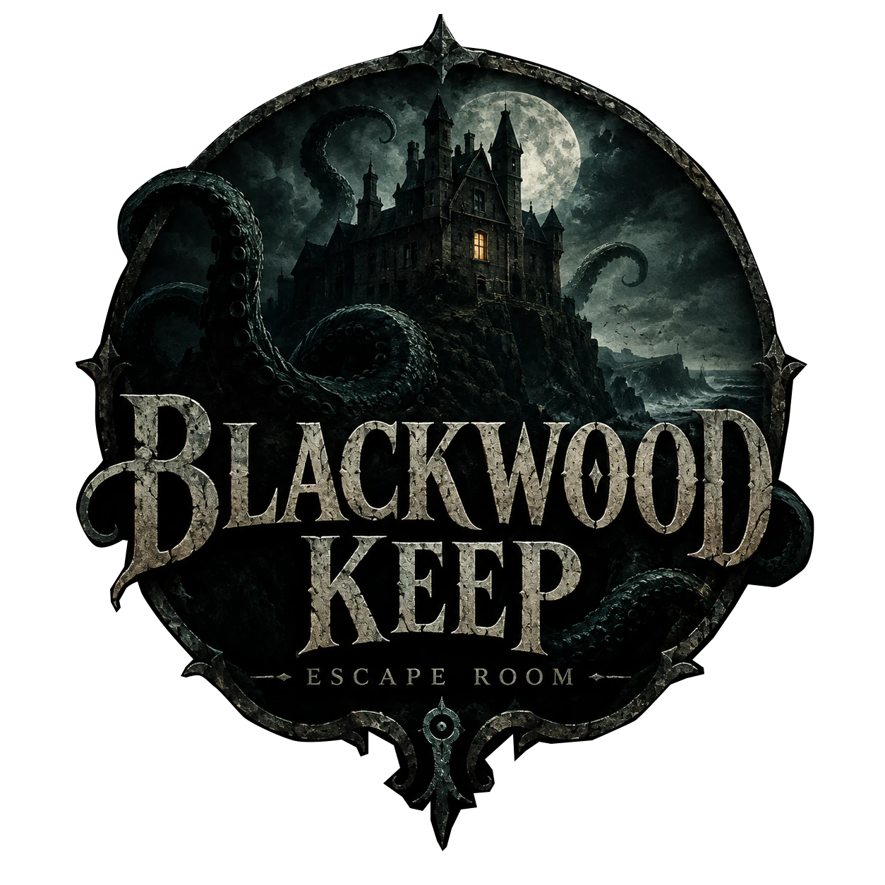

Nivel 1 completado
Enhorabuena: has salido del sótano. La casa sigue ahí arriba.
- Tiempo de juego
- -
- Documentos en el cuaderno
- -
Continuará…
Nivel 2 próximamente
Un juego de Jon Acedo

Enhorabuena: has salido del sótano. La casa sigue ahí arriba.
Continuará…
Nivel 2 próximamente
Un juego de Jon Acedo